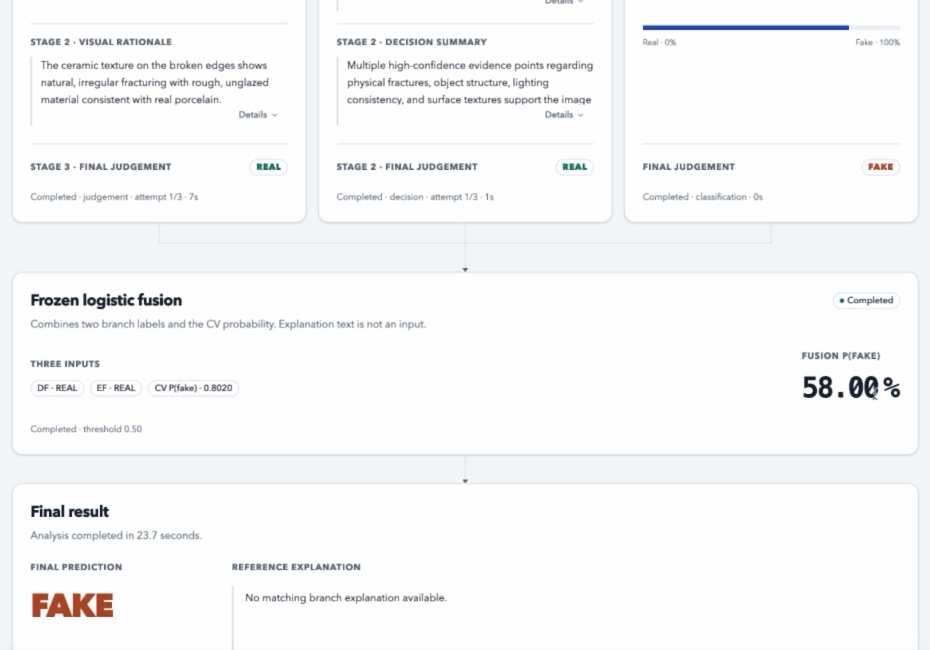

Judge.
Then review.
Qwen3.5-9B makes an initial classification, examines visual evidence and returns a reviewed verdict.
OUTPUT / FINAL LABEL + RATIONALEUNIVERSITY OF SYDNEY · MSc CAPSTONE · 2026
Explainable AI-Generated Image Detection through Independent Visual Forensics and Complementary LMM Reasoning
Eight-person team / COMP5703THE PROJECT
Our team built a research prototype for examining whether an image is real or AI-generated—and what supports that judgment.
The interface brings three independent analysis branches into one workflow. A visitor can compare their outputs, inspect the language branches’ visual reasoning, view the combined prediction and download the saved result.
My work focused on the direct-detection baseline and reproducibility checks. I later investigated the frozen system’s errors, asking whether disagreement could help identify cases that deserve another look.
THE TEAM FRAMEWORK
Qwen3.5-9B makes an initial classification, examines visual evidence and returns a reviewed verdict.
OUTPUT / FINAL LABEL + RATIONALEThe same fixed vision–language model first records structured visual evidence. A second, text-only stage judges from that evidence.
OUTPUT / EVIDENCE + FINAL LABELA fine-tuned ResNet-50 independently estimates the probability that the image is AI-generated.
OUTPUT / P(FAKE)Detection-first label
Evidence-first label
CV probability
Combined score
& final classification
Fusion was fitted and selected on validation data, then frozen for testing. Branch explanations remain separate; the fusion model outputs a score and label.
A RECORDED EXAMPLE

Both language routes chose “real”; the visual classifier favoured “fake”. The frozen fusion returned a fake prediction at 58.00%.
This saved run has no supplied ground-truth label or matching reference explanation. The values document the model’s output.
TEAM EVALUATION / TEST-900
Fusion balanced accuracy
849 / 900 images classified correctly
6,000 FakeBench images: 3,000 real and 3,000 AI-generated, covering ten generators. We used 4,200 training, 900 validation and 900 test images.
The test split contains 450 real and 450 generated images. All ten generators appear in each split.
These are team results on the archived evaluation split. Performance on unseen generators and external datasets remains untested.
| Method | Balanced accuracy |
|---|---|
| Direct baseline | 84.78% |
| Detection-first | 87.11% |
| Evidence-first | 82.56% |
| CV / ResNet-50 | 88.67% |
| Frozen fusion | 94.33% |
A better classification score did not consistently produce better explanations. Our separate explanation evaluation used 200 generated images. Whether these explanations help people make better decisions remains an open question.
MY CONTRIBUTION
I implemented the direct-detection baseline and audited 60,000 saved predictions across ten submitted runs against the shared 6,000-image task manifest. I checked parsing, alignment and reproducibility for the team handover.
I independently rebuilt all 900 fusion predictions from the saved coefficients and branch outputs. All labels matched, with no retraining or threshold changes.
I analysed branch disagreement and class-specific errors, including cases where fusion corrected a majority decision and cases where it introduced a new error.
The 275 disagreement cases contained 45 fusion errors. This makes disagreement a useful question for further review, while also flagging 230 correct predictions and leaving six errors outside the group.
0.96% error rate
16.36% error rate
This is a retrospective error analysis. Actual human-review time, correction quality and workflow benefit have not been evaluated.
WHAT THIS CHANGED FOR ME
A confident answer is a starting point.
I want to build interfaces that help people
inspect, question and correct it.